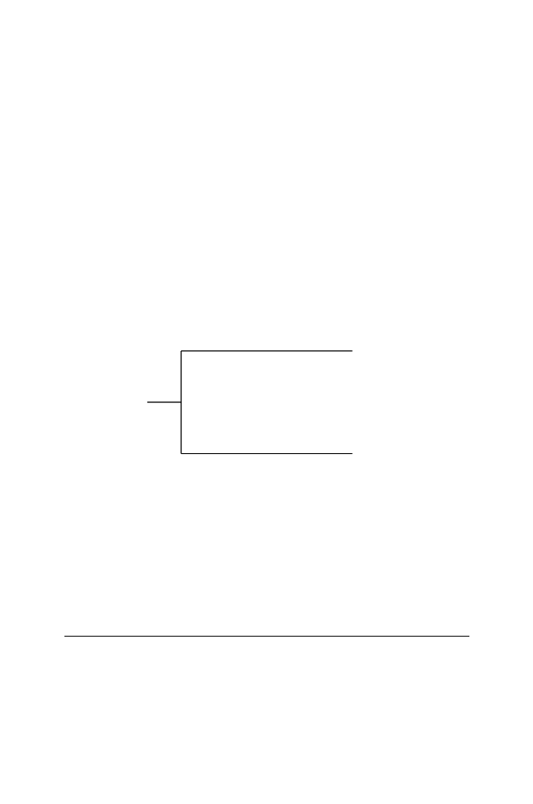

5.1 The Biological Problem
123
5.1.1 Modeling Conserved Synteny
When comparing genomes of two organisms such as mice and humans, we
sometimes observe local similarities in the gene content and gene order. If two
or more genes that occur together on a single chromosome in organism B also
occur together on a particular chromosome in organism C, this occurrence
is an example of
conserved synteny
(see Fig 1.4 in Chapter 1). As shown in
Fig. 5.1, the gene orders may or may not be conserved within syntenic blocks
that are distributed among different chromosomes in a related organism. We
will use a simple example to show how such patterns can arise by genome
rearrangement.
Figure 5.2 shows four different ancestral “chromosomes,” each distin-
guished by a different color. Each ancestral chromosome is of identical size,
and each has ten “genes” 0
,
1
, . . . ,
9. Each number/color combination repre-
sents a unique gene. This means that 2-green is not the same gene as 2-red.
The telomeres are indicated by a single slash, /. We will model an evolutionary
process indicated in the following diagram:
Ancestor A
Descendant B
Descendant C
inversion 1 inversion 2
inversion 3 inversion 4
To model the genome rearrangements, we line up the A chromosomes in
tandem and then invert different portions of this combined string in two in-
dependent steps to obtain chromosomes of Descendant B. The same process
is repeated by inverting different segments to produce Descendant C. By in-
version, we mean that we take a portion of the sequence of genes and reverse
their order relative to the surrounding genes. For example, if the middle three
genes represented by 1
2 3 4
5 were inverted, the result would be 1
4 3 2
5.
Inversions of chromosomal regions are well-documented in most organisms for
which there are genetic data.
Fig. 5.2
(Following page)
.
[This figure also appears in the color insert.] Model
producing conserved synteny in descendant chromosomes B and C after independent
inversion steps starting with ancestral chromosome A. Telomeres (/) divide the
“genes” (numbered) into four chromosomes. Chromosomes are placed end-to-end
before inversions (reversals) are performed to simulate translocation. Two inversion
steps on the path leading to B and two inversion steps on the path leading to C are
sufficient to generate syntenic relationships resembling those seen in Fig. 5.1.